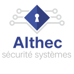
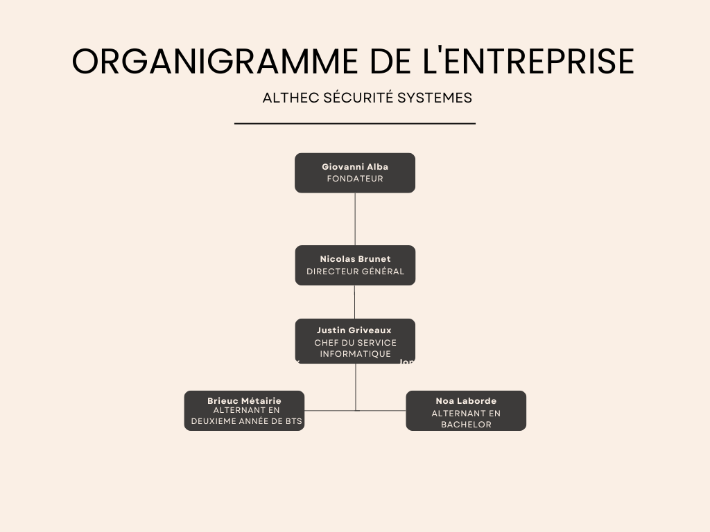
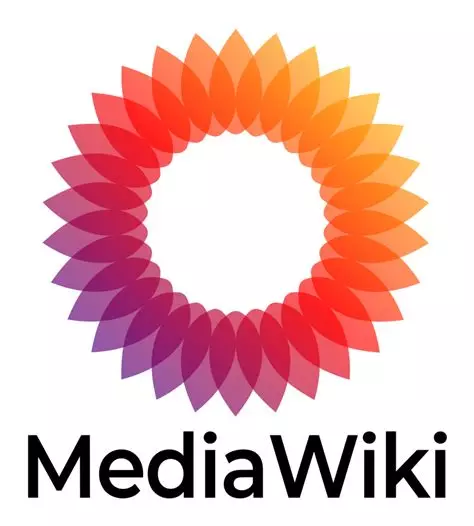

Bienvenue, je suis Brieuc Métairie
Étudiant en BTS SIO option SISR, je m’intéresse à l’informatique orientée systèmes et réseaux : installation, configuration, administration et sécurisation d’équipements et de services.
Le BTS SIO – option SISR
Le BTS SIO comporte deux options, mais je me spécialise en SISR (Solutions d’Infrastructure, Systèmes et Réseaux).
- Installation et configuration de postes clients
- Gestion et maintenance des serveurs et réseaux
- Sécurisation des systèmes et des accès
- Support technique aux utilisateurs
Administration systèmes
Gestion réseau
Virtualisation
Maintenance PC
Cybersécurité
Mon école — Faculté des Métiers de l’Essonne
Je prépare mon diplôme à la Faculté des Métiers de l’Essonne (FDME), un centre de formation reconnu qui propose des cursus en alternance et des parcours professionnalisants. Le rythme d’alternance me permet d’acquérir des compétences concrètes en entreprise tout en consolidant les bases techniques en cours.
Découvrir la FDME
Mon CV
Télécharge mon CV au format PDF :
📄 Télécharger mon CV (PDF)
Présentation de l’entreprise

Nom : Althec Sécurité Systèmes
Secteur : Sécurité électronique (alarmes intrusion, vidéosurveillance, contrôle d’accès, interphonie)
Taille : PME
Localisation : Villeneuve-le-Roi
Activité principale
Althec Sécurité Systèmes conçoit, installe et maintient des solutions de protection pour les particuliers et les professionnels. L’objectif est de sécuriser les lieux (maisons, commerces, bureaux, sites industriels) grâce à des systèmes fiables et faciles à utiliser.
Offre de services
- Étude du besoin et conseil (audit des risques, choix du matériel)
- Installation et mise en service (alarmes, caméras, enregistreurs, contrôle d’accès)
- Configuration réseau de base (accès distant sécurisé, application mobile)
- Maintenance préventive et corrective, assistance aux utilisateurs
Valeurs et engagements
Proximité, réactivité et clarté : accompagnement du client de l’étude à la maintenance, avec une attention portée à la pédagogie et à la simplicité d’usage.
Organigramme

Activités
Déployer un MediaWiki

Actions :
- Installation de MediaWiki sur un serveur Linux
- Configuration d’Apache, PHP et MySQL/MariaDB
- Personnalisation du wiki et gestion des droits utilisateurs
- Mise en place d’une sauvegarde de la base de données
- Ajout d’extensions pour enrichir les fonctionnalités (ex : gestion des droits, éditeur visuel)
Bénéfices : Fournir une plateforme collaborative simple et efficace où les utilisateurs peuvent créer, consulter et partager de la documentation interne.
Ce déploiement de MediaWiki faisait partie d’un devoir de fin de première année de BTS SIO. L’objectif était de mettre en pratique les compétences acquises en administration système et réseau à travers un projet concret. Ce travail m’a permis de comprendre comment mettre en place un service collaboratif complet, depuis l’installation jusqu’à la configuration avancée, et de mesurer l’importance de la documentation centralisée pour une organisation.
Veille informationnelle
Je m’informe régulièrement sur l’évolution des systèmes, des réseaux et de la cybersécurité. Pour cela, je consulte différents sites spécialisés, articles techniques et contenus multimédias afin de rester au courant des nouveautés et des bonnes pratiques.
Sources
Articles récents consultés